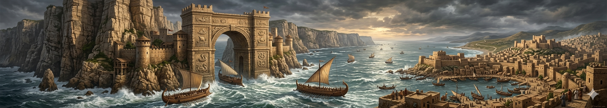
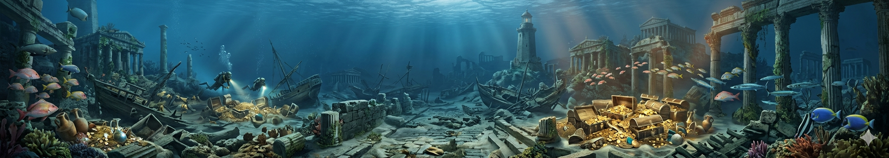

"في كل حكاية.. فلسطين"
أسطورة صخرة أندروميدا
يُحكى أنه عند ساحل يافا كانت هناك صخرة ربطت عليها أميرة جميلة لتُقدَّم قربانًا لوحش بحري. وبينما كانت الأمواج تضرب الشاطئ، ظهر بطل شجاع وواجه الوحش وأنقذها. ومنذ ذلك الوقت، بقيت الصخور القريبة من الساحل تُعتبر “شاهدة على المعركة”، ويقول الصيادون إن الأمواج هناك تختلف عن باقي البحر كأنها تتذكر ما حدث.
أسطورة عروس البحر في يافا
كان الصيادون يقولون إن فتاة جميلة تظهر فوق سطح البحر عند الغروب. كانت تغني بصوت يجعل الماء هادئًا، وتدل السفن على الطريق الآمن. وإذا اقترب أحد منها تختفي داخل الموج. لذلك اعتقد الناس أنها “روح البحر” التي تحمي الصيادين من الغرق.

أسطورة بوابة البحر القديمة
يُحكى أن في عمق بحر يافا يوجد “بوابة خفية” لا تُرى إلا في ليالٍ معينة. كان بعض البحارة يقولون إنهم رأوا ضوءًا أزرق يخرج من الماء ثم يختفي، وكأن البحر يفتح طريقًا إلى عالم آخر. وكل من حاول الاقتراب أكثر عاد خائفًا دون أن يفهم ما رأى.

أسطورة كنز الميناء الغارق
تقول الحكايات الشعبية إن سفينة تجارية قديمة غرقت قرب ميناء يافا وكانت تحمل كنزًا ضخمًا. ومنذ ذلك الوقت، كان بعض الغواصين يقولون إنهم يرون أضواء تتحرك تحت الماء ليلاً، لكن كل من حاول البحث عن الكنز لم يجد شيئًا، وكأن البحر يخفيه عمدًا.